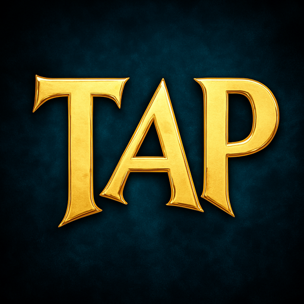
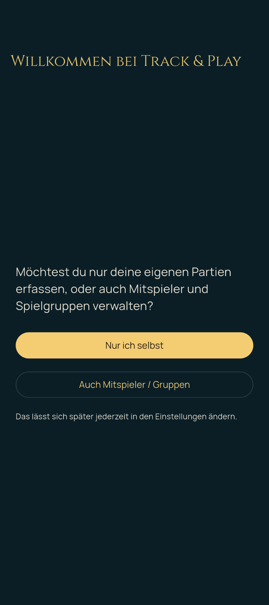
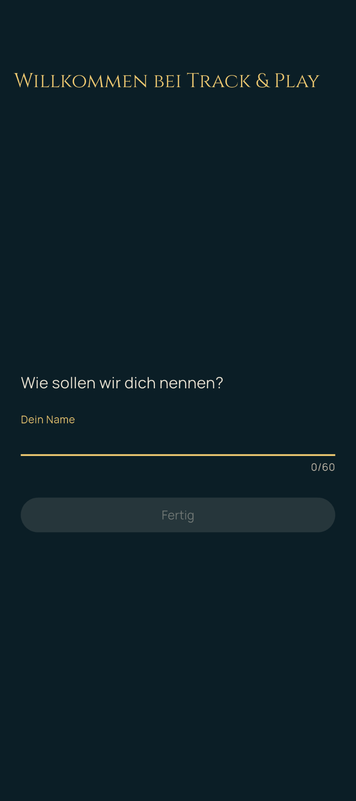
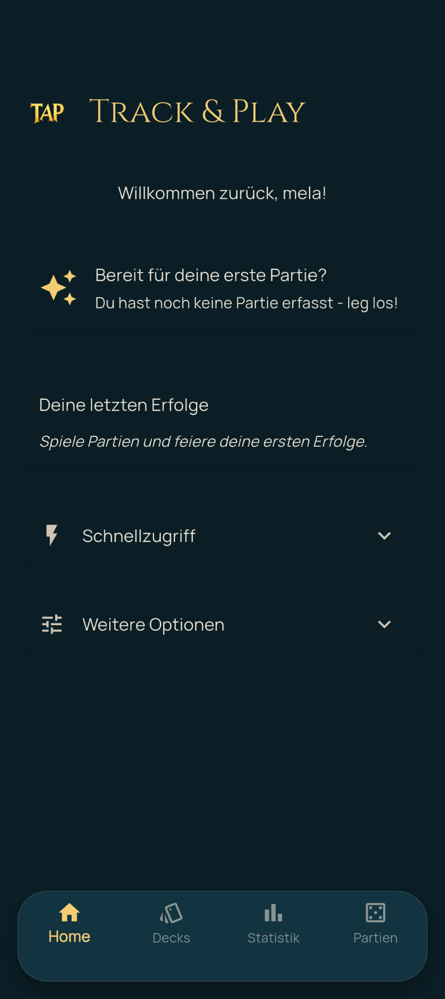
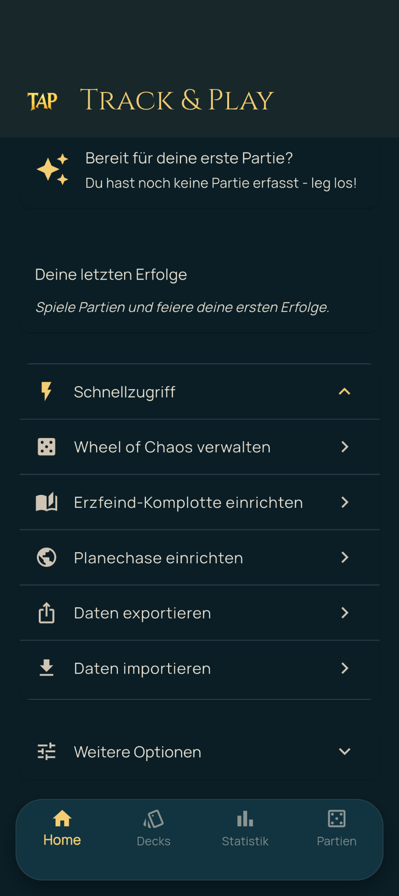
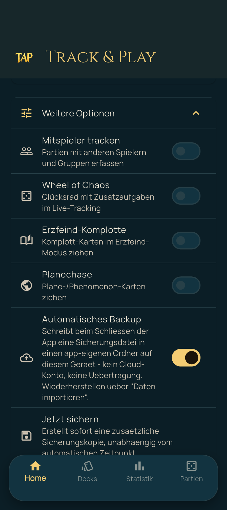
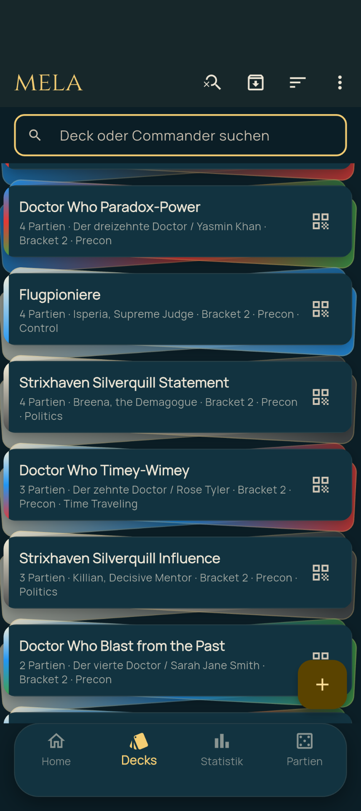

Track & Play – Benutzerhandbuch
Dieses Handbuch erklärt die Verwendung von Track & Play (TAP), der App zum Erfassen und Auswerten eigener Magic: The Gathering-Partien. Es richtet sich sowohl an Einsteiger ebenso wie an Nutzer, die die App bereits verwenden, da hier auch neue Features vorgestellt werden.

1. Erste Schritte
Beim allerersten Start zeigt Track & Play einen kurzen Einrichtungs-Dialog:
- Umfang wählen: „Nur ich selbst“ (einfachste Variante – es wird nur der eigene Spielverlauf erfasst) oder „Auch Mitspieler / Gruppen“ (zusätzlich lassen sich Mitspieler und Spielgruppen anlegen und mitverfolgen). Diese Einstellung lässt sich später jederzeit über den Schalter „Mitspieler tracken“ im Home-Tab ändern.
- Name eingeben: Unter „Wie sollen wir dich nennen?“ wird der eigene Spielername festgelegt. Dieser Spieler ist von da an der „Ich-Spieler“, auf den sich alle Statistiken beziehen.
- Optional eine erste Spielgruppe anlegen, falls im ersten Schritt „Auch Mitspieler / Gruppen“ gewählt wurde.
- Mit „Fertig“ abschließen – danach öffnet sich die Hauptansicht.


2. Navigation – die vier Hauptbereiche
Nach der Einrichtung öffnet sich die Hauptansicht mit einer Navigationsleiste am unteren Bildschirmrand mit vier Bereichen (Tabs):
- Home – Begrüßung, Elo-Score, Erinnerungen und Schnellzugriffe
- Decks – die eigene Deck-Sammlung
- Statistik – alle Auswertungen zum eigenen Spielverlauf
- Partien – die Partien-Historie und der Einstieg für neue Partien

3. Der Home-Tab
Der Home-Tab ist der zentrale Einstiegspunkt und zeigt auf einen Blick:
- Begrüßung mit dem eigenen Spielernamen.
- Elo-Score-Karte: ein Wert zwischen 0 und 100, der die grobe eigene „Spielstärke“ relativ zu einem durchschnittlichen Gegner einschätzt und sich mit jeder gewerteten Partie anpasst.
- Erinnerung an die letzte Partie: zeigt, wie lange die letzte erfasste Partie zurückliegt.
- Zufalls-Deck-Karte: schlägt per Zufall eines der eigenen Decks vor, praktisch für die Entscheidung „Was spiele ich heute?“.
- Letzte Erfolge: die zuletzt freigeschalteten Erfolgs-Abzeichen, mit Link zur vollständigen Erfolge-Übersicht (siehe Kapitel 10).
Darunter befinden sich zwei einklappbare Karten:
- Schnellzugriff: Sprungmarken zu Funktionen ohne eigenen Tab – Gruppen-Verwaltung, Wheel of Chaos, Erzfeind-Komplotte und Planechase einrichten (jeweils nur sichtbar, wenn das zugehörige Modul aktiviert ist, siehe Kapitel 12) sowie Daten-Export/-Import (siehe Kapitel 13).
- Weitere Optionen: globale Schalter für
- Mitspieler tracken (siehe Kapitel 11),
- Wheel of Chaos, Erzfeind-Komplotte und Planechase (siehe Kapitel 12),
- Automatisches Backup (schreibt beim Schließen der App eine Sicherungsdatei in einen app-eigenen Ordner auf dem Gerät – keine Cloud, kein Konto, siehe Kapitel 13),
- sowie der Button „Jetzt sichern“ für eine sofortige, zusätzliche Sicherung unabhängig vom automatischen Zeitpunkt.


4. Decks verwalten
Im Tab Decks werden die eigenen Decks verwaltet:
- Über das „+“-Symbol unten rechts lässt sich ein neues Deck anlegen.
- Im Deck-Formular werden erfasst: Deckname, Commander (optional) und Partner-Commander (optional), Farbidentität, Bauart, bis zu drei Archetypen, ein Power-Bracket, ob das Deck Proxy-Karten enthält, ob es turnierlegal ist, ein optionaler Online-Link zum Deck (z. B. Moxfield/ Archidekt) sowie freie Subthemes (z. B. „Ninjutsu, Clones“).
- Über das Lupe-Symbol lässt sich die Deckliste nach Deckname oder Commander durchsuchen, über das Sortier-Symbol nach Name oder Performance-Kennzahlen ordnen.
- Decks können archiviert werden, statt sie zu löschen (z. B. wenn ein Deck nicht mehr gespielt wird) – archivierte Decks lassen sich über das Archiv-Symbol optional wieder einblenden.
- Über das QR-Symbol an einem Deck lässt sich dieses einzelne Deck per QR-Code mit einer anderen Person teilen (z. B. damit jemand das Deck in der eigenen Track & Play-Installation importieren kann), unabhängig vom umfassenderen Export-Wizard aus Kapitel 13.


5. Eine neue Partie erfassen
Eine neue Partie wird über das „+“-Symbol im Partien-Tab gestartet. Dabei gibt es zwei grundsätzlich unterschiedliche Vorgehensweisen, die sich oben auf dem Bildschirm umschalten lassen:
- Live erfassen: Die Partie wird während des Spielens direkt in der App live mitgetrackt (Lebenspunkte, Commander-Schaden, usw. – siehe Kapitel 6). Empfohlen, wenn das Gerät während der Partie griffbereit auf dem Tisch liegt.
- Manuell nachtragen: Eine bereits gespielte Partie wird nachträglich erfasst, inklusive Ergebnis, Platzierungen und Mulligans – ohne Live-Mitverfolgung der Lebenspunkte. Praktisch, wenn man erst nach dem Spiel zur App greift.
Unabhängig vom Modus werden zunächst festgelegt:
- der Spielmodus (z. B. Commander, cEDH, Two-Headed Giant, Erzfeind),
- optional eine Spielgruppe (nur sichtbar, wenn „Mitspieler tracken“ aktiv ist),
- die Teilnehmer – über „Bekannten Spieler hinzufügen“ (nur bei aktiviertem Mitspieler-Tracking) oder „Unbekannten Spieler hinzufügen“ für Gäste/Gegner ohne eigenes Profil; jedem bekannten Teilnehmer lässt sich zusätzlich sein gespieltes Deck zuordnen.
Beim manuellen Nachtragen kommen zusätzlich hinzu: das Datum der Partie, optionale Notizen, eine Bewertung der eigenen Deck-Performance (1–5 Sterne), je Teilnehmer die erzielte Platzierung und die Anzahl eigener Mulligans, sowie die Festlegung von Unentschieden bzw. des Siegerteams (bei Two-Headed Giant) oder des Siegers (bei Erzfeind: Erzfeind oder Team).
Bei der Live-Erfassung werden stattdessen festgelegt: die Start-Lebenspunkte (bei Erzfeind getrennt für Erzfeind und Team), optional das Zusatzmodul Planechase für diese eine Partie, sowie die Tisch-Anordnung – sie bestimmt, an welcher Tischseite und mit welcher Ausrichtung die Lebenspunkte-Kachel jedes Teilnehmers später angezeigt wird, wenn das Gerät flach auf dem Tisch liegt. Ein Antippen eines Namens ändert die zugewiesene Seite, der Button „Automatisch anordnen“ verteilt die Sitzplätze passend zur Zugreihenfolge im Uhrzeigersinn.
Abgeschlossen wird mit „Manuell speichern“ bzw. „Live-Erfassung starten“.
6. Live-Tracking während der Partie
Die Live-Ansicht ist für die Nutzung im Querformat ausgelegt, während das Gerät flach auf dem Tisch liegt – jeder Teilnehmer bekommt eine zur eigenen Tischseite ausgerichtete Kachel.
Lebenspunkte ändern:
- Ein einfaches Tippen auf „+“ oder „−“ ändert die Lebenspunkte um jeweils 1.
- Ein langes Drücken auf „+“ oder „−“ öffnet einen Dialog für größere Änderungen mit vordefinierten Schnellwerten sowie einem Umschalter zwischen Abzug und Zugewinn.
Weitere Elemente auf jeder Kachel:
- Commander-Schaden: öffnet einen Dialog, in dem sich der von jedem gegnerischen Commander erlittene Schaden einzeln erfassen lässt (relevant, da 21 Schadenspunkte eines einzelnen Commanders zum Ausscheiden führen). Die laufende Gesamtsumme wird direkt auf der Kachel angezeigt.
- Problem-Markierung: ein Symbol, mit dem sich der aktuell als „das Problem am Tisch“ wahrgenommene Teilnehmer markieren lässt (z. B. wer gerade das größte Boardstate-Übergewicht hat). Es kann immer nur eine Person gleichzeitig markiert sein; eine neue Markierung ersetzt automatisch die vorherige. Scheidet ein markierter Teilnehmer aus (Lebenspunkte auf 0 oder weniger), bleibt diese Information für die Statistik dauerhaft erhalten, auch wenn die Markierung danach auf einen anderen Teilnehmer wechselt.
- Erzfeind-Komplott / Ongoing-Komplotte: nur im Erzfeind-Modus mit aktiviertem Zusatzmodul sichtbar, siehe Kapitel 12.
Zu Beginn der Partie fragt ein Dialog die Anzahl der Mulligans jedes Teilnehmers ab.
Weitere Aktionen oben in der Live-Ansicht: „Rad drehen“ (Wheel of Chaos, nur falls aktiviert), „Plane wechseln“ (Planechase, nur falls aktiviert) und „Partie beenden“.
7. Partie beenden und auswerten
Über „Partie beenden“ öffnet sich ein Dialog zur Ergebniserfassung:
- Unentschieden als Kontrollkästchen,
- ansonsten je Modus die Platzierung jedes Teilnehmers, bzw. bei Two-Headed Giant das Sieger-Team, bei Erzfeind Erzfeind oder Team als Sieger.
Mit „Bestätigen“ abschließen. Anschließend folgt die Abfrage der eigenen Deck-Performance-Bewertung (1–5 Sterne) sowie – falls während der Partie Lebenspunkte-Verläufe aufgezeichnet wurden – die Frage, ob dieser Verlauf dauerhaft gespeichert werden soll (siehe die Verlaufsgrafik in Kapitel 8).
8. Partien-Historie und Detailansicht
Der Tab Partien zeigt alle erfassten Partien in chronologischer Reihenfolge, mit einem Filter nach Spielmodus oben auf dem Screen. Ein Tippen auf eine Partie öffnet die Detailansicht mit:
- den Rahmendaten (Datum, Modus, Dauer, Gruppe),
- allen Teilnehmern inklusive Platzierung/Ergebnis und gespieltem Deck,
- bei Commander-Partien der Aufschlüsselung des erlittenen/ausgeteilten Commander-Schadens,
- und, sofern bei einer Live-Partie aufgezeichnet und gespeichert, der Lebenspunkte-Verlaufsgrafik am Ende der Detailansicht – sie zeigt den Verlauf aller Teilnehmer über die Dauer der Partie als Linienverlauf.
9. Statistik
Der Tab Statistik bündelt alle Auswertungen zum eigenen Spielverlauf. Oben lässt sich die Auswahl nach Spielmodus, Zeitraum und (bei aktiviertem Mitspieler-Tracking) Gruppe einschränken – alle folgenden Werte beziehen sich jeweils nur auf die aktuelle Auswahl.
Kennzahlen-Reihe: Siegquote, Anzahl Partien, längste Siegserie.
Ergebnisse: ein Ring-Diagramm mit der Aufteilung in Siege, Niederlagen und Unentschieden, darunter zusätzlich die Unentschieden-Quote als eigene Kennzahl (wie oft eine Partie in einem Unentschieden endet, unabhängig von der allgemeinen Siegquote, die ein Unentschieden als Nicht-Niederlage mitzählt).
Weitere Detail-Kennzahlen (jeweils nur sichtbar, wenn Daten dafür vorliegen): durchschnittliche Partiendauer, durchschnittliche Platzierung, durchschnittliche Anzahl Mulligans samt Siegquote mit/ohne Mulligan, durchschnittliche Deck-Performance-Bewertung, ausgeteilte/erlittene Commander-Kills, First Blood (wie oft der erste ausgeteilte Schaden von einem selbst kam, samt Siegquote-Vergleich), „Das Problem am Tisch“ (wie oft man selbst im Moment des Ausscheidens so markiert war, samt Siegquote-Vergleich) sowie die Comeback-Quote (Siege trotz kritisch niedriger Lebenspunkte).
Vergleichs-Übersichten nach Farbidentität, Startposition, Partiendauer, Deck-Archetyp, Deck-Bauart, Bracket, Commander-Partner und Deck-Eigentum (eigenes vs. verliehenes Deck) zeigen jeweils die Siegquote für die jeweilige Gruppe.
Verleih-Auswertung: eine eigene Auswertung dazu, wie die eigene Siegquote ausfällt, wenn andere Personen eigene Decks ausleihen und spielen.
10. Erfolge
Unter „Deine letzten Erfolge“ auf dem Home-Tab (Link „Alle anzeigen“) öffnet sich die vollständige Erfolge-Übersicht mit allen verfügbaren Abzeichen, gruppiert nach Kategorien: Sieg-Serien, Partien gespielt, Siege, Farbchampion, Wochentags-Serien und Spezial. Auch noch nicht erreichte Abzeichen werden angezeigt (ausgegraut), damit erkennbar bleibt, was es noch zu erreichen gibt.
11. Mitspieler und Gruppen
Dieser Bereich ist nur verfügbar, wenn der Schalter „Mitspieler tracken“ (Home-Tab → Weitere Optionen) aktiviert ist.
- Über „Gruppen verwalten“ (Schnellzugriff auf dem Home-Tab) lassen sich Spielgruppen anlegen – feste Spielrunden, denen sich Partien zuordnen lassen, um z. B. in der Statistik nach Gruppe zu filtern. Innerhalb einer Gruppe lassen sich über „Mitglied hinzufügen“ weitere Mitspieler ergänzen (auch archivierte Spieler lassen sich dabei optional einblenden).
- Jeder Mitspieler hat eine eigene Spieler-Detailansicht mit dessen Decks, erreichbar z. B. über die Gruppen-Detailansicht. Von dort lässt sich ein Spielerprofil auch per QR-Code teilen oder umbenennen.
12. Zusatzmodule: Wheel of Chaos, Erzfeind-Komplotte, Planechase
Drei optionale Zusatzmodule lassen sich unabhängig voneinander im Home-Tab unter „Weitere Optionen“ aktivieren. Ist ein Modul aktiv, erscheint im Schnellzugriff ein passender Einrichtungs-Punkt sowie in der Live-Ansicht die zugehörige Bedienmöglichkeit:
- Wheel of Chaos: ein Glücksrad mit Zusatzaufgaben je Farbidentität, das während der Live-Partie über den Button „Rad drehen“ gedreht werden kann. Die Aufgaben je Farbe lassen sich unter „Wheel of Chaos verwalten“ bearbeiten.
- Erzfeind-Komplotte: zieht im Erzfeind-Modus während der Live-Partie Komplott-Karten (laufend oder einmalig auflösbar). Unter „Erzfeind-Komplotte einrichten“ lässt sich festlegen, aus welchen Sets gezogen wird (alle verfügbaren Sets oder eine Auswahl bestimmter Sets).
- Planechase: zieht Plane-/Phenomenon-Karten, wahlweise für die gesamte Partie aktivierbar (nur im Commander-Modus). Unter „Planechase einrichten“ lässt sich ebenso die Set-Auswahl festlegen; reichen die lokal gespeicherten Karten für die Teilnehmerzahl nicht aus, erscheint beim Partie-Setup ein entsprechender Hinweis.
13. Daten exportieren, importieren und sichern
- Daten exportieren (Schnellzugriff auf dem Home-Tab): Auswahl, welche Kategorien exportiert werden sollen (Spieler, Decks, Gruppen, Partien), anschließend entweder Teilen über das System-Teilen-Menü (z. B. per Messenger oder Cloud-Speicher) oder direktes Speichern in einen frei wählbaren Ordner auf dem Gerät.
- Daten importieren (Schnellzugriff auf dem Home-Tab): liest eine zuvor exportierte Datei wieder ein, inklusive Abfrage bei möglichen Dubletten (z. B. „Gleiche Person?“ bei einem bereits bekannten Spielernamen oder die Nachfrage, ob ein bestehendes Deck aktualisiert werden soll).
- Einzelnes Deck oder Spielerprofil per QR-Code teilen: schneller als der vollständige Export-Wizard, direkt über das QR-Symbol in der Deckliste bzw. der Spieler-Detailansicht. Über „QR-Code scannen“ im Import-Bereich lässt sich ein so geteiltes Deck oder Spielerprofil wieder einlesen.
- Automatisches Backup (Home-Tab → Weitere Optionen, standardmäßig aktiviert): schreibt beim Schließen der App eine Sicherungsdatei in einen app-eigenen Ordner auf dem Gerät – ausschließlich lokal, ohne Cloud-Konto oder Übertragung. Eine Wiederherstellung erfolgt über „Daten importieren“. Zusätzlich lässt sich über „Jetzt sichern“ jederzeit sofort eine weitere Sicherungskopie anlegen, z. B. vor einem Gerätewechsel.
14. Häufige Fragen
Ich habe während der Partie keine Lebenspunkte live mitgetrackt – kann ich
das Ergebnis trotzdem erfassen?
Ja, über „Manuell nachtragen“ beim Anlegen einer neuen Partie (siehe
Kapitel 5). Dabei lassen sich Ergebnis, Platzierungen und Mulligans
nachträglich eintragen, nur der minutengenaue Lebenspunkte-Verlauf entfällt.
Wie ändere ich meinen eigenen Spielernamen oder sehe meine Decks?
Über die Spieler-Detailansicht des eigenen Profils, erreichbar über den
Decks-Tab (dort lässt sich oben rechts auch umbenennen).
Ich spiele nur für mich allein, brauche ich Gruppen/Mitspieler?
Nein – ist „Mitspieler tracken“ deaktiviert (Standard bei der Auswahl „Nur
ich selbst“ in der Ersteinrichtung), entfallen alle entsprechenden
UI-Bereiche vollständig, ohne dass dadurch Funktionen fehlen, die sich auf
den eigenen Spielverlauf beziehen.
Wo liegen meine Daten?
Ausschließlich lokal auf dem eigenen Gerät. Für eine Übertragung auf ein
neues Gerät oder als zusätzliche Sicherung siehe Kapitel 13
(Export/Backup).
Dieses Handbuch wird bei neuen Funktionen laufend ergänzt. Rückmeldungen und Fragen gerne direkt an die Entwicklung weitergeben.